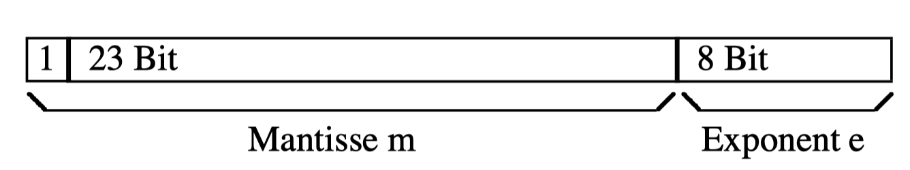

3.2 Datenrepräsentation
3.2.1 Bits
Ein Bit (Binary Digit) ist die kleinste Informationseinheit in der digitalen Welt. Es kann nur zwei Zustände annehmen: 0 oder 1. In Computern werden alle Daten – Zahlen, Texte, Bilder und Programme – letztlich als lange Folgen von Bits gespeichert und verarbeitet. Die Zustände 0 und 1 entsprechen dabei physikalisch unterschiedlichen Spannungen oder Schaltzuständen in elektronischen Bauteilen. Zur Darstellung eines Bits in Python wird der Datentyp bool verwendet, der die Werte True (1) und False (0) repräsentiert.
Grundoperationen auf Bits
Mittels der logischen Interpretation von Bits als Wahrheitswerte, können drei Grundoperationen definiert werden, die auf Bits angewendet werden können.
1. Logisches AND: \(b_1 \land b_2\)
| \(b_1\) | \(b_2\) | \(b_1 \land b_2\) |
|---|---|---|
| 0 | 0 | 0 |
| 1 | 0 | 0 |
| 0 | 1 | 0 |
| 1 | 1 | 1 |
2. Logisches OR: \(b_1 \lor b_2\)
| \(b_1\) | \(b_2\) | \(b_1 \lor b_2\) |
|---|---|---|
| 0 | 0 | 0 |
| 1 | 0 | 1 |
| 0 | 1 | 1 |
| 1 | 1 | 1 |
3. Logisches NOT (Negation, Komplement): \(\neg b\)
| \(b\) | \(\neg b\) |
|---|---|
| 0 | 1 |
| 1 | 0 |
Mit den drei Grundoperationen AND, OR und NOT können alle möglichen Operationen auf Bits definiert werden.
Beispiel 1
| \(b_1\) | \(b_2\) | \(f_8(b_1, b_2)\) |
|---|---|---|
| 0 | 0 | 0 |
| 1 | 0 | 0 |
| 0 | 1 | 0 |
| 1 | 1 | 1 |
Auflösung: \(f_8(b_1,b_2)=b_1 \land b_2\)
Beispiel 2
| \(b_1\) | \(b_2\) | \(f_{11}(b_1, b_2)\) |
|---|---|---|
| 0 | 0 | 1 |
| 1 | 0 | 1 |
| 0 | 1 | 0 |
| 1 | 1 | 1 |
Auflösung: \(f_{11}(b_1,b_2)=\neg b_1 \lor b_2\)
Frage: Wie viele solcher Funktionen mit 2 Bits gibt es?
Lösung: Es gibt \(2^{2^n}\) Funktionen mit n Bits. Für n=2 sind es also \(2^{2^2}=16\) Funktionen.
Bemerkung:
entweder oder
| \(b_1\) | \(b_2\) | \(b_1 \text{ xor }b_2\) |
|---|---|---|
| 0 | 0 | 0 |
| 1 | 0 | 1 |
| 0 | 1 | 1 |
| 1 | 1 | 0 |
Auflösung: \(b_1 \text{ xor }b_2=(b_1 \lor b_2) \land \neg(b_1 \land b_2)\)
Bemerkung:
Bitweise Addition mit Übertrag
| \(b_1\) | \(b_2\) | Summe: \(b_1 \text{ xor }b_2\) | Übertrag: $b_1 b_2 $ |
|---|---|---|---|
| 0 | 0 | 0 | 0 |
| 1 | 0 | 1 | 0 |
| 0 | 1 | 1 | 0 |
| 1 | 1 | 0 | 1 |
Bemerkung:
Bitweise Subtraktion, Multiplikation und Division vergleiche Arbeitsblatt.
Exkurs Aussagenlogik
Die Aussagenlogik ist ein grundlegendes Werkzeug, um Sachverhalte präzise zu beschreiben und logisch zu analysieren. In der Mathematik wird sie genutzt, um Beweise zu führen, Aussagen zu verknüpfen und die Gültigkeit von Argumenten zu überprüfen. In der Informatik bildet die Aussagenlogik die Basis für die Entwicklung von Algorithmen, die Funktionsweise von Schaltungen, die Programmierung von Bedingungen (if, while, etc.) und die Fehleranalyse. Sie hilft, komplexe Probleme in einfache, logisch überprüfbare Einzelschritte zu zerlegen.
Grundbegriffe
- Aussage: Ein Satz, der eindeutig wahr oder falsch ist.
- Wahrheitswert: Jede Aussage ist entweder wahr (W) oder falsch (F).
- Logische Operatoren:
- Negation (\(\neg\)): Nicht
- Konjunktion (\(\land\)): Und
- Disjunktion (\(\lor\)): Oder
- Implikation (\(\Rightarrow\)): Wenn … dann
- Äquivalenz (\(\Leftrightarrow\)): Genau dann, wenn
Wahrheitstafeln
| A | B | \(\neg\) A | A \(\land\) B | A \(\lor\) B | A \(\Rightarrow\) B | A \(\Leftrightarrow\) B |
|---|---|---|---|---|---|---|
| W | W | F | W | W | W | W |
| W | F | F | F | W | F | F |
| F | W | W | F | W | W | F |
| F | F | W | F | F | W | W |
Beispiele
- Negation: Die Aussage „Es regnet“ wird zu „Es regnet nicht“.
- Konjunktion: „Es regnet und es ist warm.“
- Disjunktion: „Es regnet oder es ist warm.“
- Implikation: „Wenn es regnet, dann ist die Straße nass.“
- Äquivalenz: „Die Lampe leuchtet genau dann, wenn der Schalter an ist.“
3.2.2 Bytes
Das Rechnen mit Bits ist ineffizient. Daher werden 8 Bits zu einem Byte zusammengefasst. Ein Byte dient als Grundeinheit der Datenspeicherung. Man spricht auch von einem 8-Bitvektor oder von einem Wort der Länge 8. Es gibt aber auch 16, 32, 64 Bit Worte. Daher spricht man von Wortbreite. (vgl. 32-Bit- und 64-Bit-Architekturen)
Alle Daten werden im Computer als Bitvektoren dargestellt. Die Wortlänge ist konstant. Die Interpretation des Bitvektors hängt vom Datentyp ab. (int vs. float vs string)
Grundoperationen auf Worten
Vergleiche bitweise Operationen auf Bits. Die Operationen werden auf jedes Bitpaar der beiden Worte an den entsprechenden Stellen angewendet.
Beispiel:
Und \(w_1 \land w_2: \quad 11001010 \land 10000001 = (1 \land 1)(1 \land 0)(0 \land 0)(0 \land 0)(1 \land 0)(1 \land 0)(0 \land 0)(0 \land 1) = 10000000\)
Oder \(w_1 \lor w_2: \quad 11001010 \lor 10000001 = (1 \lor 1)(1 \lor 0)(0 \lor 0)(0 \lor 0)(1 \lor 0)(1 \lor 0)(0 \lor 0)(0 \lor 1) = 11001011\)
Negation \(\neg w: \quad \neg 11001010 = \neg(1)(1)(0)(0)(1)(0)(1)(0) = 00110101\)
Nur definiert auf Worte gleicher Breite
3.2.3 Umformen der Zahldarstellung
Bei uns Menschen herrscht auf Grund der 10 Finger das Dezimalsystem = Zehnersystem vor. In diesem System gibt es die Ziffern 0, 1, … 9. Möchte man größere Zahlen darstellen, so werden die Ziffern in verschiedenen Stellenwerten verwendet. Jede Stelle entspricht einer 10er Potenz, beginnend von rechts mit \(10^0\). Die Basis des Systems ist somit 10.
Beispiel:
\(3455_{10}=3\cdot 10^3+4\cdot 10^2+5\cdot 10^1+5\cdot 10^0\)
$ = 3 + 4 + 5 + 5 $
Ein Computer arbeitet jedoch mit dem Binärsystem, das die kleinste Informationseinheit ein Bit darstellt, welches den Zustand 0 (Strom aus) oder Zustand 1 (Strom an) annehmen kann. Die Basis im Binärsystem ist die 2. Es gibt nur die beiden Ziffern 0 und 1. Möchte man größere Zahlen darstellen, benötigt man analog zum bekannten Dezimalsystem ein Stellenwertsystem. Im Fall des Binärsystems wird dafür die Basis 2 verwendet. Jede Stelle einer Zahl im Binärsystem entspricht vom Wert her einer 2ert Potenz, beginnend von rechts mit \(2^0\).(Gootfried Wilhelm Leibniz 1646-1716)
Beispiel
\(110011_2 = 1 \cdot 2^5 +1 \cdot 2^4 +0\cdot 2^3+0 \cdot 2^2 + 1 \cdot 2^1 + 1 \cdot 2^0\)
\(= 1 \cdot 32 + 1\cdot16 + 0\cdot 8+ 0\cdot 4+ 1\cdot 2+1\cdot 1\)
Es muss Möglichkeiten geben, um die Zahlendarstellungen umzurechnen. Die Umrechnung von Binärzahl ind Dezimalzahl ist leicht. Man addiert die Produkte der Stellenwerte und erhält die Dezimalzahl. Mit der Umrechnung von Dezimalzahlen in Binärzahlen ist es nicht so einfach.Das obere Beispiel ergibt somit:
\(110011_2 = 1 \cdot 2^5 +1 \cdot 2^4 +0\cdot 2^3+0 \cdot 2^2 + 1 \cdot 2^1 + 1 \cdot 2^0\)
\(= 1 \cdot 32 + 1\cdot16 + 0\cdot 8+ 0\cdot 4+ 1\cdot 2+1\cdot 1\)
\(= 51_{10}\)
Die Umrechnung von Dezimalzahlen in Binärzahlen ist ein Beispiel für einen Algorithmus, ein zentrales Konzept der Informatik.
Ein Algorithms ist eine Vorschrift mit folgenden Eigenschaften:
Präzision - Die Bedeutung jedes Schritts ist eindeutig festgelegt.
Effektivität - Jeder Schritt ist ausführbar.
Finitheit (statisch) - Die Vorschrift ist ein endlicher Text
Finitheit (dynamisch) - Zur Ausführung wird nur endlich viel Speicher benötigt.
Terminierung - Die Berechnung endet für alle legalen Eingaben nach endlich vielen Schritten.
Wünschenswert sind dazu folgende Eigenschaften:
Determinismus - Folgeschritte sind immer eindeutig festgelegt.
Determiniertheit - Bei gleicher Eingabe wird immer die gleiche Ausgabe erzeugt.
Generalität - Die Vorschrift kann eine Klasse von Problemen lösen.
Auch Vorschriften, welche die wünschenswerten Eigenschaften nicht erfüllen, werden als Algorithmen angesehen.
Beispiele:
- Bedienungsanleitungen
- Aufbauanleitung bei Möbeln zum Beispiel
- Verhaltensvorschriften bei Unfällen, Alarmen, usw.
- Rezepte (Vorsicht: Rezepte enthalten häufig Ungenauigkeiten)
- Rechenvorschriften
- usw.
Algorithmus zur Umrechnung von Dezimalzahl in Binärzahl:
Gegeben Dezimalzahl n und die Basis b =2. q ist der Quotient aus n//b und r der Divisionsrest.
- Bestimme \(q = n//b\) und $r = n%b $
- Schreibe r links an die Ausgabe
- Falls \(q \neq 0\) gehe zu 1.
- Sonst fertig.
Beispiel:
B=2 und n = 42
- \(42:2=21\) Rest 0
- \(21:2=10\) Rest 1
- \(10:2=5\) Rest 0
- \(5:2=2\) Rest 1
- \(2:2=1\) Rest 0
- \(1:2=0\) Rest 1
- Fertig, weil \(q=0\)
- Ergebnis \(101010_2\) von unten nach oben gelesen.
3.2.4 Hexadezimalsystem
- Stellenwertsystem mit Basis 16 = 4 Bit pro Stelle
- Ziffern: 0, 1, … 9, a, b, c, d, e, f
- Jede Stelle entspricht einer 16er Potenz beginnen mit \(16^0\) von rechts
Beispiel:
\(\text{beef}_{16} = 11 \cdot 16^3 + 14 \cdot 16^2 +14 \cdot 16^1+ 15 \cdot 16^0\)
\(= 11 \cdot 4096 + 14 \cdot 256 + 14 \cdot 16+ 15\)
\(= 48879_{10}\)
3.2.5 Zusammenfassung Zahlensysteme
Welche natürlichen Zahlenbereiche sind mit welcher Wortlänge darstellbar?
| Wortlänge (Bits) | Darstellbarer Zahlenbereich |
|---|---|
| 1 | 0 bis 1 |
| 2 | 0 bis 3 |
| 4 | 0 bis 15 |
| 8 | 0 bis 255 |
| 16 | 0 bis 65535 |
| 32 | 0 bis 4.294.967.295 |
| 64 | 0 bis 18.446.744.073.709.551.615 |
Grundrechenarten von Worten mit mehr als 1 Bit
Addition
| + | 0 | 1 |
|---|---|---|
| 0 | 0 | 1 |
| 1 | 1 | 0 mit Übertrag 1 |
Beispiel \[\begin{aligned}\quad &111001\\ +&111011\\ \text{Übertrag: } &110110\\ \hline 1&110100 \end{aligned} \]
Subtraktion
| - | 0 | 1 |
|---|---|---|
| 0 | 0 | 1 mit Übertrag 1 |
| 1 | 1 | 0 |
Beispiel \[\begin{aligned}\quad &111001\\ -&111011\\ \text{Übertrag }&110110\\ \hline 1&110100 \end{aligned} \]
Multiplikation
| * | 0 | 1 |
|---|---|---|
| 0 | 0 | 0 |
| 1 | 0 | 1 |
Beispiel siehe Arbeitsblatt
Division
| / | 0 | 1 |
|---|---|---|
| 0 | not defined | 0 |
| 1 | not defined | 1 |
Beispiel siehe Arbeitsblatt
3.2.5 Datentypen - Syntax und Semantik
1. Semantik eines Datentyps (Bedeutung)
Menge von Werten und den Operationen auf diesen Werten.
2. Syntax (Schreibweise, Darstellung)
Darstellung eines Wertes (=Literal) und die Operationssymbole zu den Operationen.
3. Pragmatik
Syntax und Semantik sollen den üblichen mathematischen Konventionen und Definitionen entsprechen.
Beispiele:
- Integer
- Die Zahl sechszehn kann durch das Literal 16 dargestellt werden
- Die Zahl sechszehn kann auch durch das Literal 0x10 (hexadezimal) dargestellt werden.
- Die Zahl sechszehn kann auch durch das Literas 0b10000 (binär) dargestellt werden.
- Float
- Die Zahl nullkommazwei kann durch das Literal 0.2 dargestellt werden.
- Die Zahl nullkommazwei kann durch das Literal 2.0e-1 dargestellt werden.
- String
- Die Zeichenkette Hund kann als Literal “Hund” dargestellt werden.
- Die Zeichenkette Hund kann als Literal ‘Hund’ dargestellt werden.
- Die Zeichenkette Hund kann als Literal ’‘’Hund’’’ dargestellt werden.
In Python
Jeder Wert besteht aus zwei Teilen:
Typ
interen Repräsentaiton des Werts
Die interne Representation des Wertes ist immer eine Folge von Bits. (Bitvektor) Der Bitvektor wird anhand des Typs interpretiert:
0x10 im Datentyp int würde als 16 interpretiert werden.
0x10 im Datentyp float würde als 2.24E44 interpretiert werden.
0x40490fd0 im Datentyp float würde als 3.14159 interpretiert werden.
0x40490fd0 im Datentyp int würde als 1078530000 interpretiert werden.
0x68656c6c6f00 im Datentyp string würde als hello interpretiert werden.
3.2.6 Realisierung der Ganzzahlwerte im Speicher - Zwei-Komplementdarstellung
Zur rechnerinternen Darstellung ganzer Zahlen im 1Bit-Speicher wird häufig die sogenannte 2-Komplementdarstellung verwendet.
Ein Bit (=binary digit)ist die kleinste mögliche Informationseinheit. Mögliche Werte für ein Bit sind 0 oder 1. Dies entspricht dem Computerzustand Strom an oder Strom aus. In der logischen Interpretation wäre falsch = 0 und wahr = -1.
Der Wert einer Zahl $ a=a_n a_{n-1} … a_0$ mit \(n\) Bits in 2-Komplementdarstellung ist definiert als:
\[ \text{Wert}(a) = -a_n·2^{n}+\sum_{i=0}^{n-1} a_i·2^i \]
Beispiel: 3-Bit 2-Komplementdarstellung \((n = 3)\)
\(\text{Wert}(011) = 0\cdot 2^2 + 1 \cdot 2^1 + 1 \cdot 2^0 = 3\)
\(\text{Wert}(101) = -1\cdot 2^2 + 1 \cdot 2^1 + 0 \cdot 2^0 = -3\)
| Wert in 3-Bit 2-Komplementdarstellung | Wert in Vorzeichen-/Betragsdarstellung |
|---|---|
| 000 | 0 |
| 001 | 1 |
| 010 | 2 |
| 011 | 3 |
| 100 | -4 |
| 101 | -3 |
| 110 | -2 |
| 111 | -1 |
Vorteile
Vorteilhaft bei dieser Art der Darstellung ist: - Es gibt nur eine Darstellung der Zahl 0. - Die Subtraktion zweier Zahlen lässt sich einfach auf eine Addition zurückführen.
3.2.7 Realisierung von Fließkommawerten im Speicher - Gleitkommadarstellung
Eine reelle (eigentlich: rationale) Zahl wird im 1Bit-Speicher dargestellt durch die sogenannte Gleitkommadarstellung:
\[ z = m \cdot b^e \]
mit - \(m\): Mantisse - \(b\): Basis - \(e\): Exponent (zur Basis b)
In der Praxis wählt man für \(b\) meistens eine der Zahlen 2, 10, 16 und stellt dementsprechend die Zahl \(m\) als Ziffernfolge im Dual-, Dezimal-, oder Hexadezimalsystem dar.
Der IEEE 754-Standard für eine Zahl \(z\) in Gleitkommadarstellung legt die Größe der einzelnen Komponenten dieser Darstellung fest und hat folgendes Format (das erste Bit ist hierbei das Vorzeichen der Mantisse \(m\)):
32-Bit-IEEE 754-Gleitkommazahlen:

IEEE ist die Abkürzung für “Institute of Electrical and Electronics Engineers”, eine Organisation, die Standards für verschiedene Technologien entwickelt und pflegt.
Bei der Darstellung der Zahlen im Rechner reserviert man einen festen Teil einer Folge von Speicherzellen (1-Bit Speichern) für die Mantisse und den Rest für den Exponenten (den Wert von \(b\) braucht man nicht zu speichern, da alle Rechnungen mit demselben Wert von \(b\) durchgeführt werden).
Beispiel:
Sei \(b = 2\) und hat man insgesamt 32 Bit zur Verfügung
26 Bit werden für die Mantisse (incl. Vorzeichen) und 6 Bit für den Exponenten (incl. Vorzeichen) 3 Bit verwendet. Das erste Bit kennzeichnet jeweils das Vorzeichen; dabei kann man insbesondere für den Exponenten auch die 2-Komplementdarstellung benutzen. Die rechnerinterne Darstellung der Zahl 12,25 würde dann wie folgt aussehen:

Thema zum Weiterdenken: Die Gleitkommadarstellung ist nicht eindeutig. Die Zahle 12,26 läst sich auf zum Beispiel diese Arten darstellen.
- \(1100,01\cdot 2^0\)
- \(110,001\cdot 2^1\)
- \(11,0001\cdot 2^2\)
- usw.
Daher wird in der Informatik die normierte Gleitkommadarstellung verwendet, bei der die Mantisse immer mit einer 1 beginnt (außer bei der Zahl 0). Dadurch wird die Darstellung eindeutig und es gibt keine Mehrdeutigkeiten mehr. Informiere dich über die normierte Gleitkommadarstellung.
- Es sind auf diese Weise nur endlich viele reelle Zahlen darstellbar.
- Es gibt jeweils eine kleinste und eine größte darstellbare Zahl.
- Es gibt ein endliches Intevall um den Nullpunkt, in dem keine darstellbare Zahl liegt.
- Ein analoges Intervall gibt es selbstverständlich um andere Zahlen.